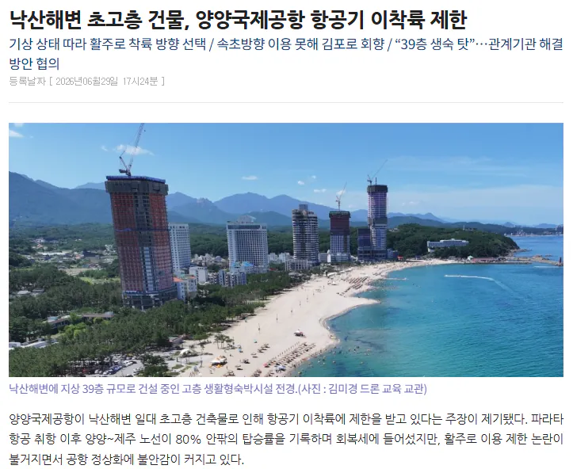
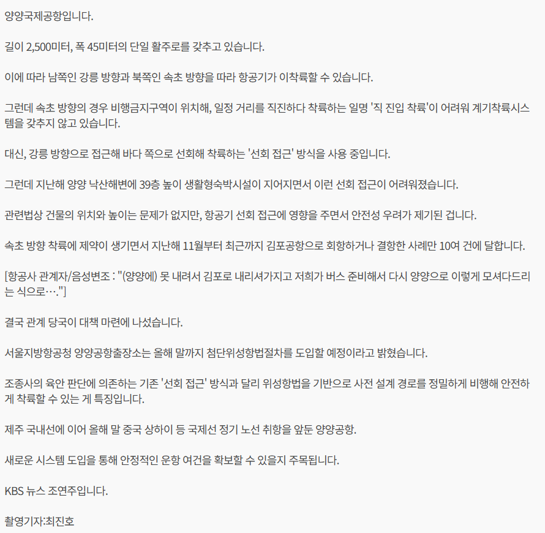

고층 건물에 양양공항 난감…첨단 위성 항법 도입 | KBS 뉴스
낙산해변 초고층 건물, 양양국제공항 항공기 이착륙 제한 - 설악신문-
비행기 접근 경로를 방해하는 39층짜리 건물 세워져서
김포로 회항해서 버스로 데려다주는 일이 급증 ㅋㅋㅋㅋㅋㅋㅋㅋㅋ


김포로 회항해서 버스로 데려다주는 일이 급증 ㅋㅋㅋㅋㅋㅋㅋㅋㅋ
양양공항에서 하루에 비행기가 고작 두편 뜨는데 한달에 한번 이상 회항이나 결항하는건 문제가 있지 않나
이걸 승인을 해주네 ㅋㅋㅋ
제와피 사옥이 생각나네
저거 승인은 언제해줘서 벌써 다 지어가는거야?
공항있으면 원래 엄청 까다롭지 않나?
근데 법령에 위치,높이 문제가 없다고 함.
누군가는 해먹었겠네 ㅋㅋ
사고나면 어쩌려고
양양은 잠깐 뜬 이후로 모든게 이상하게 돌아가내
공항을 없애던가 건물을 없애던가
양양 김포 버스 시간이 어휴 ...
ㅋㅋ
허가 내준 새끼가 범인이다
이건 승인해준놈을 샅샅히 까봐야지
저게 어케 허가가났지 ㅋㅋㅋ
저거 승인해준 새끼 뒤집어 까야지
김포에서 내려줄거면 그냥 그대로 서울가지 누가 양양까지 또 버스타고 감ㅋㅋ
저건 또 뭔 병신짓이냐ㅋㅋ
저러고 흐지부지 지나가겠구만
누가 허가해 준거냐 ㅋㅋㅋㅋㅋㅋㅋ
..? 승인이 왜 됐어
법만 되면 다 되는건가ㅋㅋㅋ
청장청장 목을 썰리자
승인한놈 찾아내고 부시자
저런데 일하눈 공뮤원이 개꿀임 암것도 안해 ㅋㅋ
공항을 없애라 개 좆만한나라에 공항을 여기저기 시발
39층? ㅋㅋㅋ 김포공항 근처 아파트들은 다 15층이구만...
이건 법이 ㅄ아님?? 관련법상 건물의 위치와 높이는 문제가 없다잖아??
내가 군생활했던곳이네 낙산아니고 하조대인뎅 미친놈들도 아니고 공항앞에 저런건물을 왜승인내준거야
병신이냐 진짜..
일처리를 어떻게 하길래 항공기가 공항에 못내리는 찐빠가 나는거야ㅋㅋㅋ 진짜 대단하다
돈을 얼마를 받고 승인을 해준거야?